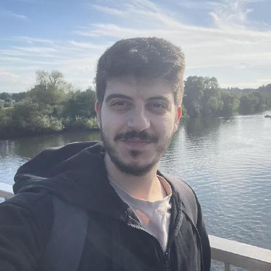

Ph.D. candidate in 3D Computer Vision · Chair of Media Technology, Technical University of Munich
I am a Ph.D. candidate at the Technical University of Munich working on 3D computer vision and machine learning. My research focuses on 4D hand–object interaction: reconstructing hands and objects in 3D and over time from video, modelling contact, and building the multi-sensor capture systems, simulators and datasets behind them. I am broadly interested in real-time perception, differentiable optimization, and embodied AI.
I have a background in software engineering, which shapes how I work: I design and build complete systems, from sensor drivers, synchronization and calibration to real-time perception pipelines and live demos. I also have a competitive-programming background, as a contestant, coach and judge.
15 peer-reviewed publications overall at venues including ICCV, IROS, IEEE RA-L, ICASSP — full list on Google Scholar. Further work (the ADL4D dataset and the FuseFit fusion method, both shown under Projects) is under peer review and will be listed here on acceptance.
I design and build complex multi-sensor systems, from hardware and drivers through synchronization, calibration and recording to live perception, behind the datasets and methods above. I work with both real sensors and synthetic data.